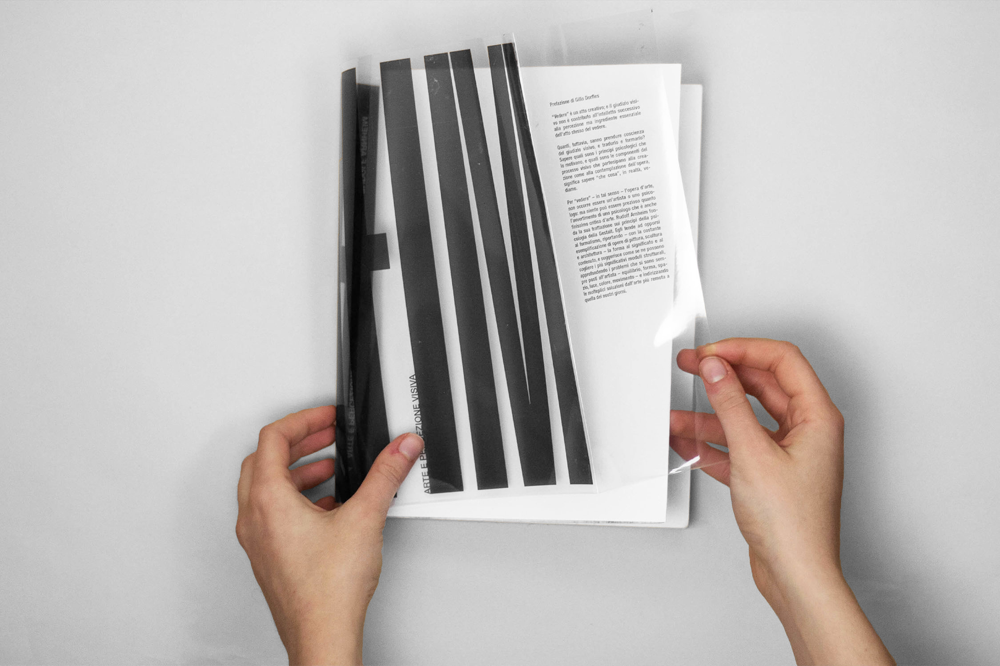

Dust jacket for Arnheim's book Art and Visual Perception. Focusing on the starting moodboard based on the concepts of light, distortion and barrier, the project consists in a white dust jacket adhering to the book and another one made of acetate with the author's name as the protagonist.
Dust jacket for Arnheim's book Art and Visual Perception.
Focusing on the starting moodboard based on the concepts of light, distortion and barrier, the
project consists in a white dust jacket adhering to the book and another one made of acetate with the author's
name as the protagonist.

